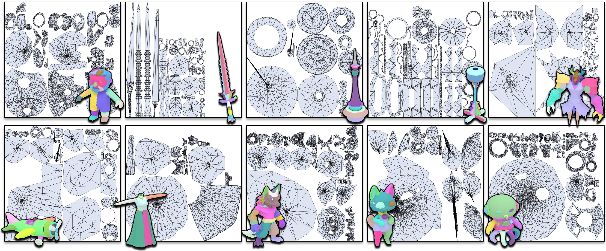

Recent advancements in autoregressive transformers have demonstrated remarkable potential for generating artist-quality meshes. However, the token ordering strategies employed by existing methods typically fail to meet professional artist standards, where coordinate-based sorting yields inefficiently long sequences, and patch-based heuristics disrupt the continuous edge flow and structural regularity essential for high-quality modeling. To address these limitations, we propose Strips as Tokens (SATO), a novel framework with a token ordering strategy inspired by triangle strips. By constructing the sequence as a connected chain of faces that explicitly encodes UV boundaries, our method naturally preserves the organized edge flow and semantic layout characteristic of artist-created meshes. A key advantage of this formulation is its unified representation, enabling the same token sequence to be decoded into either a triangle or quadrilateral mesh. This flexibility facilitates joint training on both data types: large-scale triangle data provides fundamental structural priors, while high-quality quad data enhances the geometric regularity of the outputs. Extensive experiments demonstrate that SATO consistently outperforms prior methods in terms of geometric quality, structural coherence, and UV segmentation.
Given a set of 3D points as conditioning input, our goal is to generate an artist-style mesh with organized UV segmentation. Our core contribution includes a serialization scheme that embeds macro-structural semantic cues like UV island boundaries into the token stream, and a stride-aware decoding protocol that allows the same model to generate both triangle and quadrilateral meshes.
